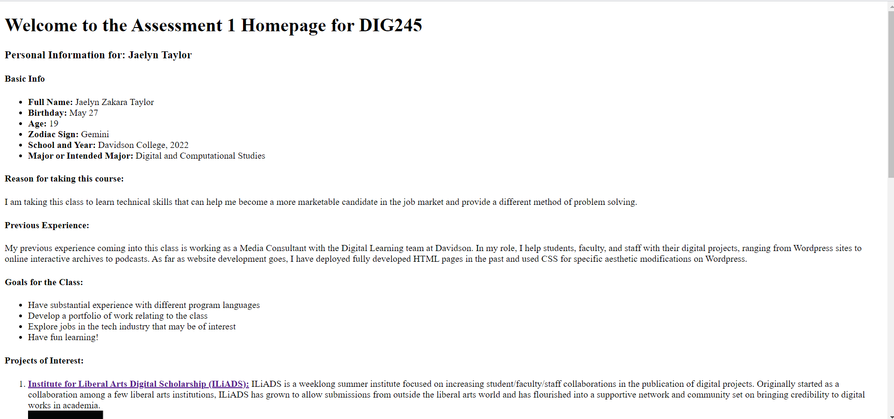
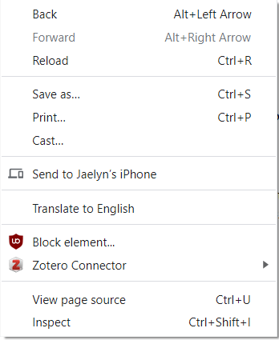
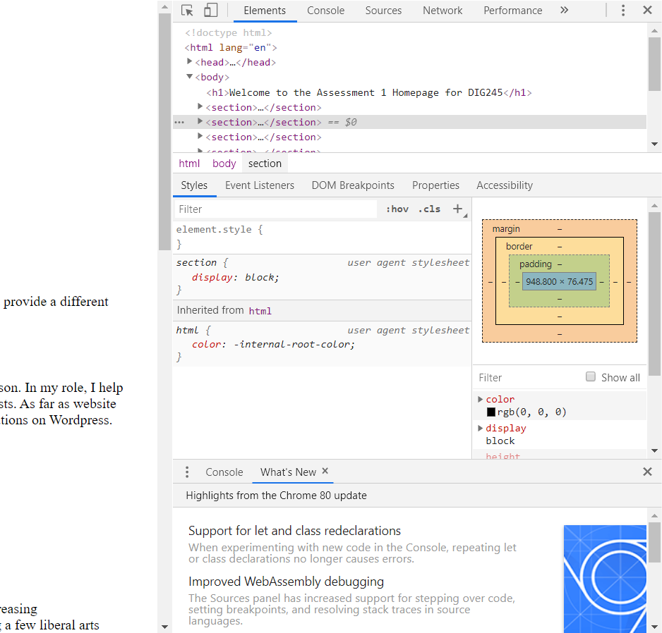

A2: The Next Frontier
How to View the HTML Source of a Webpage
- Step 1: Load the webpage you would like to see the HTML source for. For this example, I'll be using the website I created for the A1 assessment: Click Here

- Step 2: When the webpage is loaded, right click on an empty space in the site to load the dropdown menu that looks like this:

>
- Step 3: On the dropdown, select the option for "Inspect"
- Step 4: Once you've clicked inspect, a window within the page should open either to the side or at the bottom that looks like this:

- Step 5: Under the "Elements" tab, you can explore the HTML of specific aspects of the page as you scroll and make temporary changes to see what will happen.
- Step 6: Another way to view the HTML information of the page is by selecting "View Page Source" in Step 3. Another tab will open and the full HTML for the page will be loaded. For larger, more complex pages, however, this information can be dense and overwhelming.